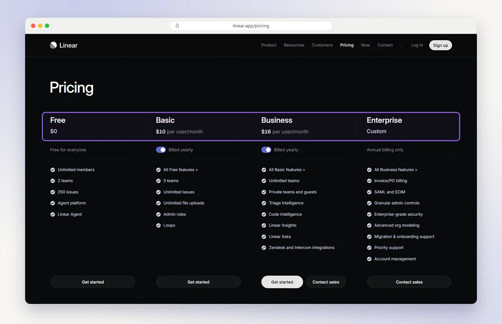
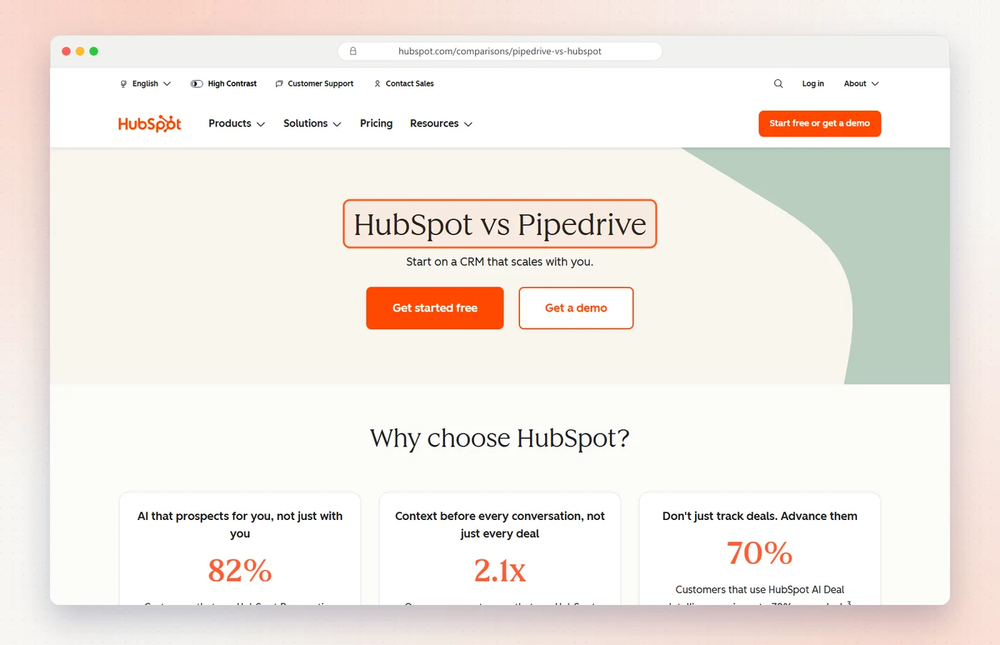
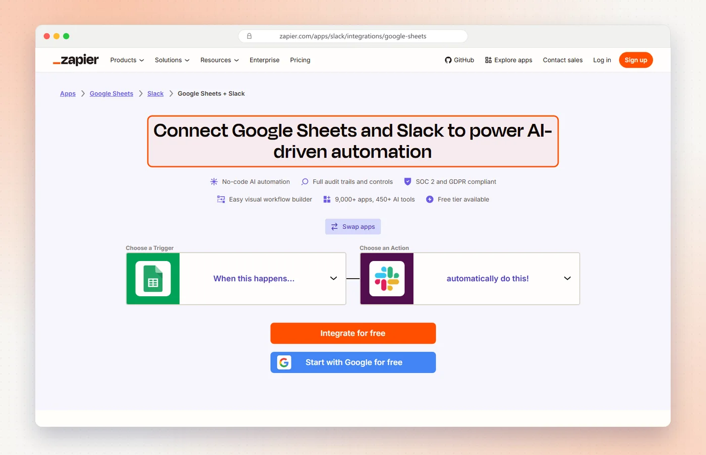
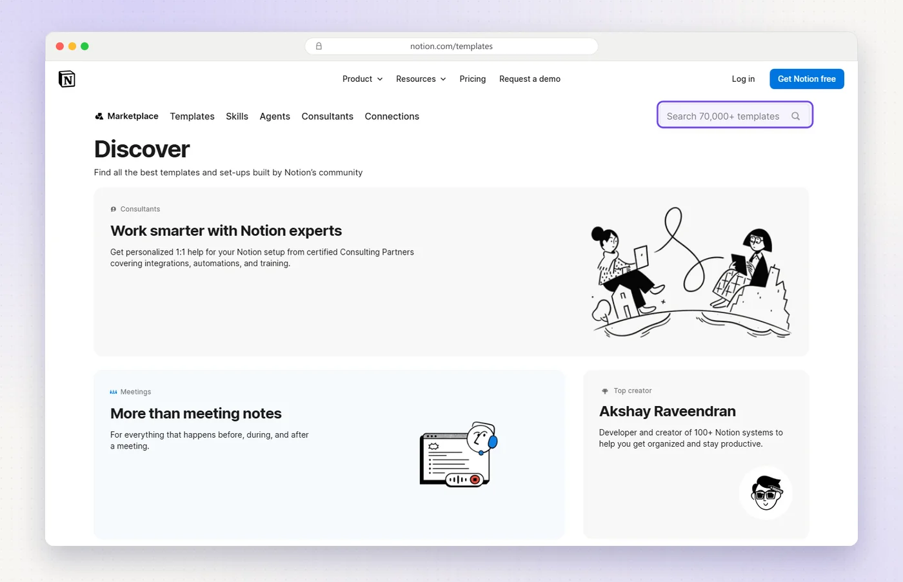
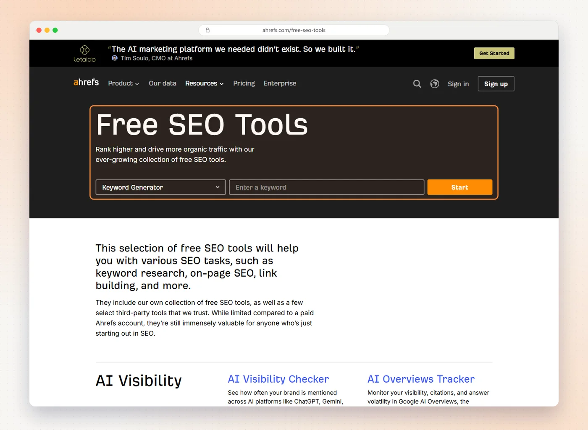
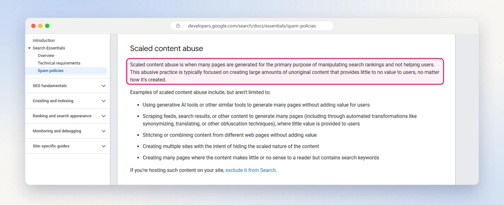
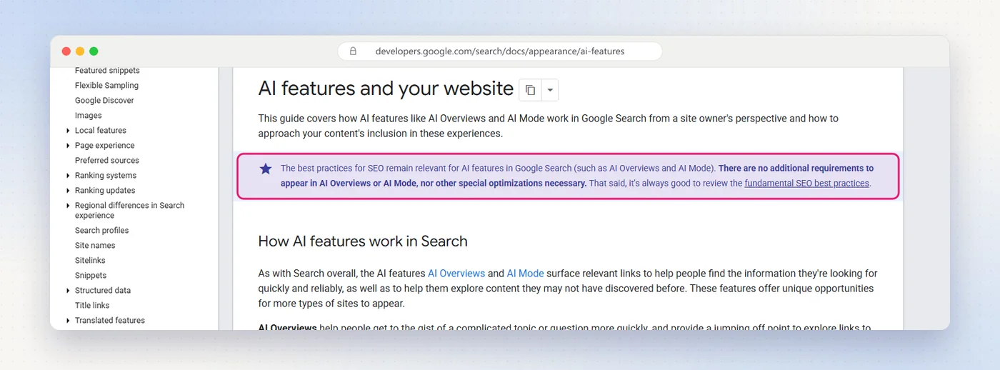
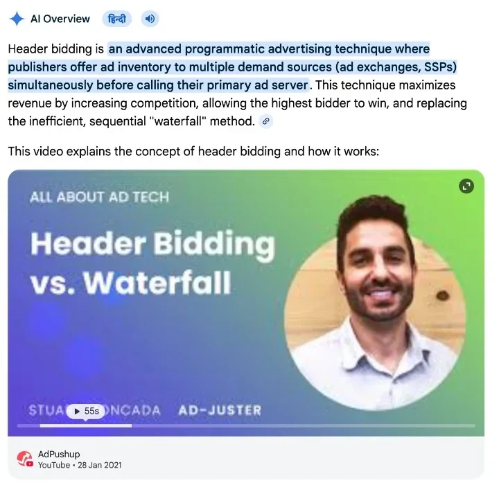
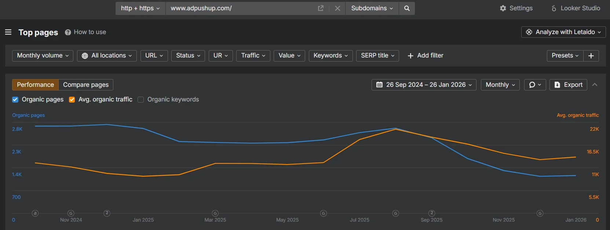
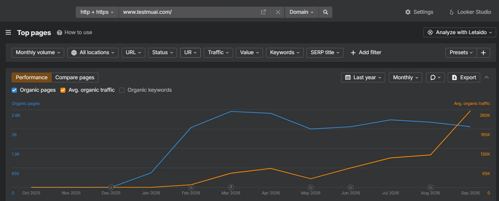

On this page
- The nine steps
- What it means
- How buyers search
- What 57 leaders publish
- 1. Crawling and speed
- 2. Keywords by stage
- 3. Pages buyers compare
- 4. Product-led pages
- 5. Problem guides
- 6. Templates, carefully
- 7. AI answers
- 8. Mentions and links
- 9. Measure and prune
- How long it takes
- A 90-day plan
- Who should do it
- Mistakes to skip
- FAQs
- Sources
SEO for B2B SaaS is the work of getting your product found when business buyers search for a solution, compare vendors and check prices, on Google and in the AI answers built on top of it. It works best in a set order: fix what stops Google from crawling and indexing you, build the pages buyers use to compare, back them with guides on the problems you solve, earn mentions on other sites, and measure pipeline instead of traffic.
I lead search and AI visibility at Fourward. To see where the work really goes, I checked what 57 well-known B2B SaaS companies publish for search on 29 October 2026, from HubSpot and Zapier to Linear and Stripe. Their sites, Google's own documentation and my own results are the basis for the nine steps below.
The nine steps at a glance
| Step | What it does | What the leaders do |
|---|---|---|
| 1. Fix crawling, indexing and speed | Makes sure Google can read the pages that sell | 49 of 55 keep the blog in a folder on the main domain |
| 2. Map keywords to buying stages | Picks searches by intent, not volume | Separate pages for each stage |
| 3. Build the pages buyers compare with | Wins the searches right before a demo | 55 of 55 have a pricing page, 44 have comparison pages |
| 4. Turn the product into pages | Integrations, templates and free tools | 46 of 55 have an integrations directory |
| 5. Write guides for the problems you solve | Reaches buyers earlier and links them to step 3 | Glossaries and "what is" pages are common |
| 6. Scale with templates, carefully | Covers long-tail searches without thin pages | Zapier has 66,000+ integration pages |
| 7. Make pages AI answers can use | Gets you quoted in AI Overviews and ChatGPT | Google says it's the same SEO work |
| 8. Earn mentions and links | Gives Google and AI a reason to trust you | Partner directories, reviews, original data |
| 9. Measure pipeline, then prune | Shows what works and cuts what doesn't | Demo and trial events, not traffic |
Fourward sells SEO, AEO and GEO work to B2B SaaS teams, so I have a stake in this topic. Every outside fact links to its source. The site data comes from my own check of 57 public sites on 29 October 2026, and you can download the full table.
- SEO for B2B SaaS is getting a software product found in Google and AI answers by the business buyers who research, compare and shortlist vendors before they talk to sales.
- B2B SaaS SEO is different because searches are small but valuable, a group of people decides, and buyers compare vendors on their own first.
- A bottom-of-funnel page is a page for someone close to choosing: pricing, "X vs Y", alternatives, integration and use-case pages.
- Programmatic SEO is building many pages from one template and a data set, such as one page for every integration.
- Of 55 B2B SaaS leaders I could check, all 55 have a pricing page, 51 publish customer stories, 46 have an integrations directory and 44 have comparison or alternatives pages.
- Google says there are no extra requirements to appear in AI Overviews or AI Mode. The page has to be indexed and allowed to show a snippet.
What SEO for B2B SaaS means
It's the same SEO as anywhere else, aimed at a different buyer. The differences decide where the effort goes.
| B2B SaaS SEO | Consumer SEO | |
|---|---|---|
| Search volume | Small, specific searches | Large, broad searches |
| Who decides | A buying group, 13 people in a typical decision (Forrester) | Usually one person |
| The page that converts | Pricing, comparison and integration pages | Product and category pages |
| The goal | Demos, trials and pipeline | Sales or ad revenue |
A search with 50 monthly visitors who are comparing two vendors can be worth more than one with 5,000 students. Plan by intent first, volume second.
How B2B buyers search in 2026
Buyers now start with search and AI, and get far on their own before they talk to anyone.
- AI comes first. Forrester's 2026 buying study calls generative AI search the starting point for B2B buyers. A typical decision involves 13 internal stakeholders and nine outside influencers.
- Buyers want to do it alone. In a Gartner survey of 646 B2B buyers, 67% said they prefer a rep-free experience, and 45% used AI during a recent purchase.
- AI answers sit on top of Google. Google says AI Overviews reach more than 2.5 billion people a month, and AI Mode more than 1 billion.
- Fewer clicks reach you. Pew found people clicked a regular result in 8% of visits with an AI summary, against 15% without one. The shortlist is often made before anyone visits your site.
- Searches the problem
On Google or in ChatGPT
Guides and definitions - Reads an AI answer
A shortlist appears
Pages AI can quote - Checks with peers
Reviews, Reddit, colleagues
Mentions elsewhere - Compares vendors
Features, fit and price
Comparison and pricing pages - Books a demo
Or starts a trial
A clear next step
What 57 SaaS leaders publish for search
I checked the public sites of 57 well-known B2B SaaS companies for the page types that win buying searches. Two sites, Freshworks and Pipedrive, blocked automated requests, so the numbers are out of 55.
How I checked
- Sources. Each site's homepage links, its robots.txt and up to 70 of its XML sitemaps.
- Matching. Page types were matched by URL path, such as /pricing, /compare/ or "-vs-", then checked by hand. Blog posts don't count as comparison pages.
- Limits. Sitemaps can miss pages, so every number is a floor. I found Ahrefs', Cloudflare's and Webflow's comparison pages by hand after the sitemaps missed them.
The leaders spend their search effort on pages for buyers who are already comparing. Blogs matter, but pricing, comparison, integration and use-case pages are where nearly all of them start.
1. Fix crawling, indexing and speed first
Nothing else works if Google can't crawl, render and index the pages that sell. Start in Google Search Console.
What to check
- Indexing. In the Page indexing report, your pricing, comparison and integration pages should all show as indexed.
- JavaScript. If your marketing site renders in the browser, check that Google sees the text. Google's JavaScript SEO guide explains how it renders pages.
- The app. Keep login, app and staging URLs out of the index, so crawling goes to marketing pages.
- One address per page. Use canonical tags and redirects for old plan pages, trailing slashes and http.
Core Web Vitals targets
| Metric | Good | What it measures |
|---|---|---|
| LCP | 2.5 seconds or less | How fast the main content loads |
| INP | 200 milliseconds or less | How fast the page responds to a click or tap |
| CLS | 0.1 or less | How much the layout jumps while loading |
Google measures these at the 75th percentile of page loads. INP replaced First Input Delay in March 2024, so a guide that still lists FID is out of date.
Where to put the blog
- What the leaders do. 49 of 55 keep the blog in a folder on the main domain. Five use a subdomain: HubSpot, Cloudflare, Dropbox, Sentry and Postman. GitHub uses its own domain.
- Starting fresh? A folder like /blog is the simpler choice: one site to build links to and one set of internal links.
- Already on a subdomain and ranking? Moving it is a migration with its own risk. Do it only with a redirect plan.
2. Map keywords to buying stages
The best B2B SaaS searches tell you how close the buyer is to choosing. Give each stage its own page type.
| Stage | What the search looks like | The page that answers it |
|---|---|---|
| Has a problem | "how to reduce churn", "what is revenue operations" | Guide or definition page |
| Looks for a solution | "best CRM for startups", "customer success software" | Use-case or category page |
| Compares vendors | "hubspot vs pipedrive", "asana alternatives" | Comparison or alternatives page |
| Ready to decide | "zapier pricing", "slack google sheets integration" | Pricing or integration page |
Where to find the real searches
- Search Console. The queries you already get impressions for, page by page.
- Sales calls and demo forms. The words buyers use, and the competitors they name.
- Support tickets and docs search. The questions customers still ask after buying.
- Review sites. The alternatives buyers list next to you on G2 and Capterra.
- The next question. Google says AI Overviews and AI Mode may use "query fan-out", running several related searches across subtopics. Cover the questions a buyer asks next, not just the main one.
3. Build the pages buyers compare with first
These are the pages a buyer opens right before talking to sales. Nearly every leader has them.
Pricing page
- All 55 sites have one. That includes companies whose top plan says "contact sales".
- Show what you can. Plan names, who each plan is for, what's included and the starting price.
- Answer billing questions on the page. Seats, annual discounts, trials and what happens at the limit.

Comparison and alternatives pages
- 44 of 55 have them. HubSpot, Asana, Rippling, Zendesk, PostHog and Miro each run a whole section.
- One page per competitor buyers really name. Start with the two or three your sales team hears most.
- Be fair. Say where the other product is the better pick. A one-sided page reads like an ad, to buyers and to AI.
- Date it and keep it current. Competitors change prices and features often.

The 11 companies without comparison pages are mostly developer platforms and category leaders, such as Stripe, GitHub, Twilio and Datadog. Buyers already put them on the shortlist. Most SaaS companies aren't in that position.
Use-case and industry pages
- 51 of 55 have them. One page per team, role or industry, each with its own proof.
- Pair each with a customer story. 51 of 55 publish named customer stories too.
Our guide to GEO for B2B SaaS shows how the same pages answer the questions buyers ask AI.
4. Turn the product into pages
Your product already holds data that people search for: the apps it connects to, the templates it ships with and the jobs it does.
Integration pages
- 46 of 55 have an integrations directory. It catches searches like "slack google sheets integration".
- Zapier is the extreme case. Its sitemaps list more than 66,000 integration pages, and that count comes from only 70 of its 853 sitemap files.
- Okta's sitemaps list 8,391. Each one is a page in its Okta Integration Network.
- Make each page useful. Say what the integration does, how to set it up and who uses it.

Templates
- 27 of 55 have a template gallery. Each template answers a search like "project plan template".
- ClickUp's sitemaps list more than 23,000 template URLs. Notion's gallery says you can search 70,000+ templates.

Free tools
- A small tool can rank for years. Examples: HubSpot's email signature generator, Figma's color contrast checker and Deel's employee cost calculator.
- Build it next to the product. The tool should solve one step of the job your product does in full.

5. Write guides for the problems you solve
Guides reach buyers before they know which product they want. Their job is to pass those readers to the pages in step 3.
Plan them as clusters
- One main guide per problem. For example, "how to reduce churn".
- Supporting pages around it. Templates, checklists, examples and definitions.
- Links in both directions. Each guide links to the related use-case, comparison or pricing page.
Define your category's terms
- "What is" pages get quoted. HubSpot keeps a glossary of CRM, marketing and sales terms. Cloudflare runs a learning center for networking and security terms.
- Open with a one-sentence definition. It's the line Google and AI answers lift.
Write from experience
- Show your own data. Product numbers, screenshots and real examples that no one else has.
- Name the author. Google's guide to helpful, people-first content asks who made the content and how.
6. Scale with templates, carefully
Programmatic SEO can cover thousands of long-tail searches. It can also get a site flagged for spam.

What one founder's test showed
- The setup. A founder built 225 template pages on a site with almost no links, and shared the results on Hacker News in March 2026.
- The result. After four weeks, 87% of the hub pages were indexed but only 18% of the individual pages.
- The lesson. The pages that got indexed were the ones that differed most from the template, as the author's write-up explains.
Rules that keep it safe
- Every page needs its own data. Real integration details, real template content, real numbers.
- Start small. Publish 50 pages, check the Page indexing report, then add more.
- Link down from hubs. A directory page should link to every page in it.
- Remove or noindex pages with nothing unique. They drag the rest down.
Free check. 30 checks, one score out of 100, under a minute.
7. Make pages AI answers can use
For Google's AI features, this is the same SEO work. Google says so on its own documentation page.

What to do
- Stay indexable with snippets. Google says a page must be indexed and eligible to show a snippet to appear in AI features.
- Let AI search crawlers in. ChatGPT, Claude and Perplexity use their own crawlers. Block one in robots.txt or at your firewall and you drop out of its answers.
- Answer first. Start each page with the plain answer, then the detail.
- State facts plainly. Who it's for, what it costs, what it connects to and what it can't do.
For ChatGPT in particular, our guide on how to get cited by ChatGPT covers OpenAI's crawlers and Bing indexing step by step.
8. Earn mentions and links
Your own pages say what you are. Other sites tell Google and AI whether to trust it.
Why mentions matter more now
- Buyers check outside sources. Forrester counts nine outside influencers in a typical B2B decision.
- AI cites a small set of sites. In Ahrefs' September 2026 count, Reddit took 16.8% of ChatGPT's citations and Wikipedia 7.0%.
Where B2B SaaS mentions come from
- Partner directories. Get listed in the app stores and integration pages of the tools you connect to.
- Review sites. Ask happy customers for reviews on G2 and Capterra, where buyers compare.
- Original data. A study like the one above earns links that a list of tips never will.
- Communities. Answer real questions on Reddit, Slack groups and forums, and say who you work for.
- Video and podcasts. YouTube videos show up in Google's AI answers too.

9. Measure pipeline, then prune and refresh
Traffic is a means. Track what search sends to sales, by page type.
| Measure | Where | Why |
|---|---|---|
| Demo requests and trials | GA4 key events | The result that matters |
| Source of each deal | Your CRM, plus "How did you hear about us?" | Catches buyers who found you in AI answers |
| Clicks and queries by page type | Search Console | Shows which page types work |
| AI Overviews and AI Mode | Search Console's generative AI report | How often AI answers show your links |
| What AI says about you | A monthly AI visibility check | Whether ChatGPT and others name you |
Prune and merge old content
- Find overlap. Two posts on the same question split the clicks and confuse Google.
- Merge, then redirect. Keep the stronger page, fold in the best parts, and redirect the other.
- Refresh what slips. Update dates, prices and examples on pages that are losing clicks.

A full SEO, AEO and GEO audit, plus 30 minutes with our team to walk you through it.
How long SEO takes for B2B SaaS
There's no reliable public benchmark. Here is what I've seen.
- Technical fixes. Usually visible within weeks, once Google recrawls the pages.
- New comparison and integration pages. Often a few months for long-tail searches.
- Broad category terms. Usually much longer, and only with links from other sites.

A 90-day plan
| Month | What to do | Done when |
|---|---|---|
| Month 1 | Fix indexing and speed issues, set up GA4 key events, map keywords to stages, rebuild the pricing page | Every page that sells is indexed and tracked |
| Month 2 | Publish comparison pages for your top three competitors, integration pages for your top ten apps, and two use-case pages | Each buying search has a page |
| Month 3 | Write four problem guides that link to those pages, ask partners and customers for listings and reviews, merge overlapping posts | The first report on demos by page type |
In-house, freelancer or agency
- In-house. Best when you can hire someone senior who knows your product and has time for all nine steps.
- Freelancers. Good for one part, such as technical fixes or writing, if someone in-house owns the plan.
- An agency. Good when you need the whole set at once. Our list of the best B2B SaaS marketing agencies compares 14, and our agency pricing guide shows what they charge.
Our in-house vs agency guide breaks down the costs. Fourward does this work for B2B SaaS teams: a free audit, then a written plan with the price within 24 hours.
Mistakes to skip
- Chasing volume. A big keyword full of students won't book demos.
- Blogging before the pricing and comparison pages exist. Readers arrive with nowhere to go next.
- Blocking AI search crawlers by accident. A firewall rule can do it without anyone noticing.
- Thin template pages. Thousands of near-copies is the pattern Google's spam policy describes.
- Reporting traffic only. Report demos and pipeline by page type.
- Letting old posts pile up. Merge overlaps and refresh what slips, every quarter.
FAQs
What is SEO for B2B SaaS?
SEO for B2B SaaS is getting a software product found in Google and AI answers by the business buyers who research, compare and shortlist vendors. It focuses on pricing, comparison, integration and use-case pages, backed by guides on the problems the product solves.
How is B2B SaaS SEO different from regular SEO?
The searches are smaller but worth more, a buying group decides instead of one person, and buyers compare vendors on their own before they talk to sales. So the work favors pages for buyers who are already comparing, and it's measured in demos and pipeline.
Is SEO worth it for an early-stage B2B SaaS company?
Yes, once you know who buys and what they compare you with. Start with the pricing page, two or three comparison pages and your top integrations. If almost no one searches for your category yet, pair SEO with channels that create demand.
How long does SEO take for a B2B SaaS company?
Technical fixes can show within weeks of Google recrawling the pages. New comparison and integration pages often take a few months to rank for long-tail searches. Broad category terms take much longer and need links from other sites.
Which pages should a B2B SaaS company build first?
A pricing page, comparison or alternatives pages for the competitors buyers name, integration pages for your most-used apps, and use-case pages for your main teams or industries. Of 55 SaaS leaders I checked, all 55 have a pricing page and 44 have comparison pages.
Should a SaaS blog be on a subdomain or a subfolder?
Most leaders use a folder. Of 55 B2B SaaS sites I checked, 49 keep the blog in a folder on the main domain and five use a subdomain. For a new site, a folder like /blog is the simpler choice.
Does AI search replace SEO for B2B SaaS?
No. Google says there are no additional requirements to appear in AI Overviews or AI Mode beyond being indexed and eligible for a snippet. The extra work is letting AI companies' own crawlers in and earning mentions on the sites AI cites.
Is programmatic SEO safe for SaaS?
It's safe when every page has its own useful data, such as real integration details or real template content. Google's spam policy calls mass-produced pages that add no value scaled content abuse. Start small and check how many pages Google indexes.
How do you measure B2B SaaS SEO?
Track demo requests and trials as GA4 key events, record the source of each deal in your CRM, and compare clicks by page type in Search Console. Add Search Console's generative AI report and a regular check of what AI tools say about you.
Sources
- Page types on 57 B2B SaaS sites, Fourward, checked 29 October 2026 (CSV).
- The State Of Business Buying, 2026, Forrester, January 2026.
- Gartner Sales Survey Finds 67% of B2B Buyers Prefer a Rep-Free Experience, Gartner, March 2026.
- Google I/O 2026 opening keynote, Google, May 2026.
- Google users are less likely to click on links when an AI summary appears in the results, Pew Research Center, July 2025.
- AI features and your website, Google Search Central, updated December 2025.
- Spam policies for Google web search, Google Search Central, updated August 2026.
- Page indexing report, Search Console Help.
- Understand JavaScript SEO basics, Google Search Central.
- Creating helpful, reliable, people-first content, Google Search Central.
- Web Vitals and Interaction to Next Paint becomes a Core Web Vital on March 12, web.dev.
- Generative AI performance report (Search), Search Console Help.
- The most-cited websites in ChatGPT, September 2026, Ahrefs.
- I built 225 programmatic SEO pages – Google indexed 18%, Hacker News, March 2026, and the author's full write-up.
- Ahrefs Site Explorer data for adpushup.com and testmuai.com, captured by the author.